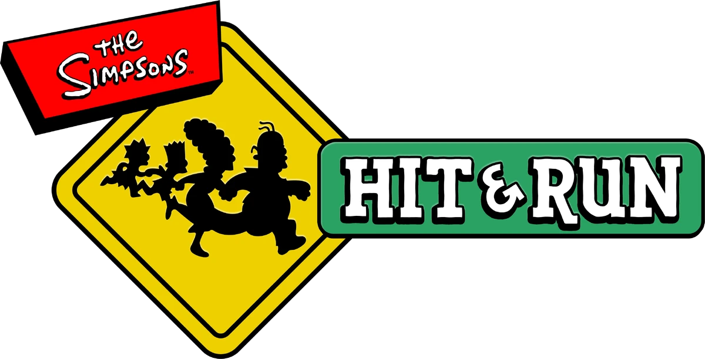

Checking local game files…
Use a ZIP of your installed PC game files. Files stay on your device.
Higher resolution and sharper texture filtering. Widescreen expands the 3D view; menus stay centered. Switch to 4:3 if objects pop in at the sides.
Enter to accept · WASD / arrows to move · Space to jump
Esc to pause · Mouse or controller for actions
Original engine browser build by iscle, based on ZenoArrows’ source port. Uses your local PC game files.